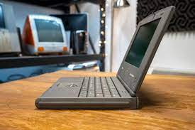
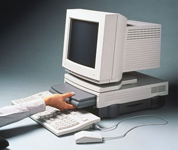

PowerBook Duos were small, light, capable laptop computers. Actually, I need to caveat all of that! It was still nearly an inch and a half thick, and at 4.2 pounds, it nevertheless weighed more than two of the new MacBooks. And even though the last model got one of the spangly new PowerPC processors, they were definitely both slow even by the standards of the day and they didn’t even have a floppy drive far less a CD-ROM or Ethernet. But the real joy and genius of the PowerBook Duo is that you could either attach one to a small portable dock or, best of all, slide it into a big desktop dock, and by adding ports, extra storage and features, it transformed into a highly usable desktop system.
The PowerBook Duo is a line of subnotebooksmanusfactured and sold by Apple Computer from 1992 until 1997 as a more compact companion to the PowerBook Lin. Improving upon the PowerBook 100’s portability (its immediate predecessor and Apple’s third-smallest laptop), the Duo came in seven different models. They were the Duo 210, 230, 250, 270c, 280, 280c, which the 210 and 230 being the earliest, and the 2300c being the final incarnation before the entire line was dropped in early 1997.
PowerBooks at the time, and remains one of Apple's smallest notebooks ever produced. Only the MacBook Air, the 13-inch (330 mm) Retina MacBook Pro and the 12-inch (300 mm) Retina MacBook weigh less, though they are wider and deeper (but considerably thinner). The Duo had the most in common with the original MacBook Air which only included one USB 2.0 port, one video port (requiring an adapter) and one speaker port, but no ability for expansion.
The Duo line offered an ultraportable design that was light and functional for travel and expandable via its unique docking monitor. However certain compromises were made to achieve this level of portability. The Duo series used an 88% of standard desktop-sized keyboard which was criticised for being difficult to type on. Likewise, the trackball was reduced in size from even that used on the PowerBook 100. The only usable port which came standard on the Duo was a dual printer/modem EIA-422 serial port.
There was a slot for an expensive, optional, internal 14.4 Express Modem and no provision for built-in Ethernet. This somewhat limited configuration meant the only way to move data in or out of the laptop in a stock configuration, without purchasing additional accessories, was via a relatively slow AppleTalk connection, which was not practical in the event of hard drive problems. Compensating for these limitations, the initial Duo offering provided for a considerably higher RAM limit of 24 MB (as compared to the 100 series' 14 MB), and a standard 80 MB hard drive (versus the 100's 40 MB drive). The debut year for the Duo only offered a passive matrix display on both the mid-level and high-end models. In contrast to the high end of the 100-series line with which the Duos shared the same processors, the PowerBook 170 and 180, with their crisp active matrix displays, were both already in great demand over the lower-powered models with passive matrix displays. The following year, Apple replaced the earlier models with both an active matrix display and a colour active matrix display, the latter becoming the de facto standard of the PowerBook line. The respective Duo models are easily differentiated by their display method and processor. All other features are identical.
The 200-series Duos were powered by either Motorola 68030 or 68LC040 processors, ranging from 25-33 MHz. When Apple debuted its next-generation PowerPC processors in 1994, it took over a year for the first PowerPC Duo (the 2300c) to debut. The original PowerPC 601, like the original 68040 before it, produced too much heat and consumed too much power for Apple to use in any laptop but, by the end of 1995, the more efficient PowerPC 603e had been developed, which was featured in the Duo 2300c and its full-size companion, the PowerBook 5300 series. The PowerPC 603e was designed for a 64-bit bus, but was engineered by Apple to run on an older 32-bit bus to maintain compatibility with the Duo Docks. This led to poor system and video performance.
PowerBook Duos lacked most common ports (featuring only one internal printer/modem serial port and an optional fax/modem card port). In their place was docking ability, accomplished via a unique 156-pin Processor Direct Slot (PDS) giving the docks full access to the Duo's central processing unit (CPU) and data buses. Several dock options were offered by Apple and third parties.

This was the largest and most expensive dock for the PowerBook Duo and this form factor common for that period: the Duo Dock offered by Apple in 1992, and the similar dock presented by Compaq (as the LTE Lite Desktop Expansion Base) and IBM (Expansion Unit 3550) in the same year. Unlike the smaller docks, or "port replicators" that plugged into the back of laptops, the listed docks pulled the laptop inside the dock's metal and plastic case via an internal sliding mechanism (similar to that of a VHS player). The Duo Dock turned the PowerBook Duo into a full-size, AC-powered, fully functional desktop computer with all the standard ports.
Like a desktop computer, the dock could physically support a heavy, high-resolution CRT display on top. The Duo Dock included a floppy drive on the side, two NuBus expansion slots, an optional floating-point unit (FPU), level 2 cache, a slot for more VRAM to enable more colors at higher resolutions, and space for a second hard drive. The original Duo Dock was replaced by the Duo Dock II, which added AAUI networking and compatibility with the newer color-screen PowerBook Duos. A replacement lid was offered to allow use of the thicker color Duos with the original Duo Dock. The Dock II was followed by the Duo Dock Plus, which was identical to the Duo Dock II, but lacked the FPU and level 2 cache—which were not compatible with the 68LC040-processor Duo 280 and PowerPC-processor Duo 2300c. While the laptop's LCD display obviously could not be opened when inside the dock, additional NuBus video cards could be installed to drive up to three monitors.
‘Source – website like wikipidea, macworld, macspecs, etc’